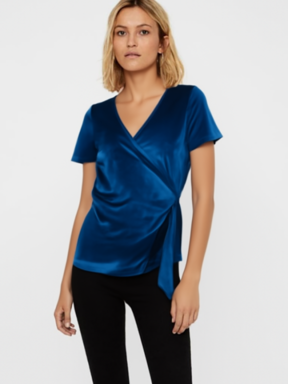
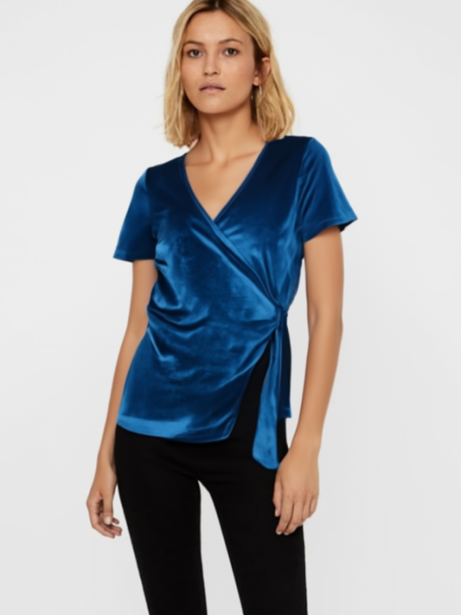
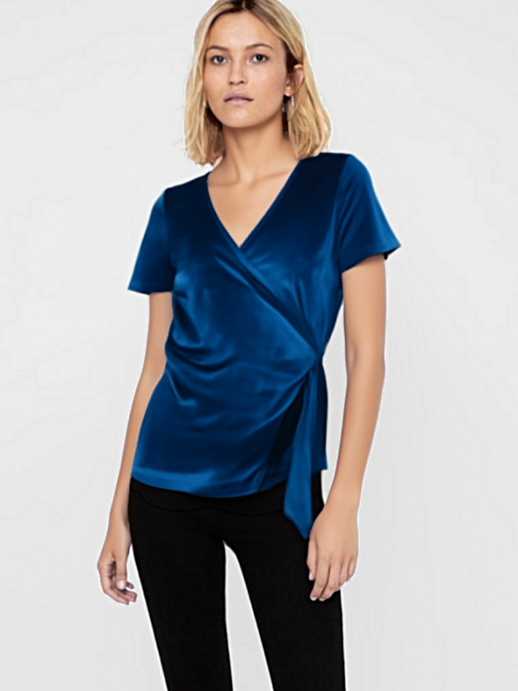
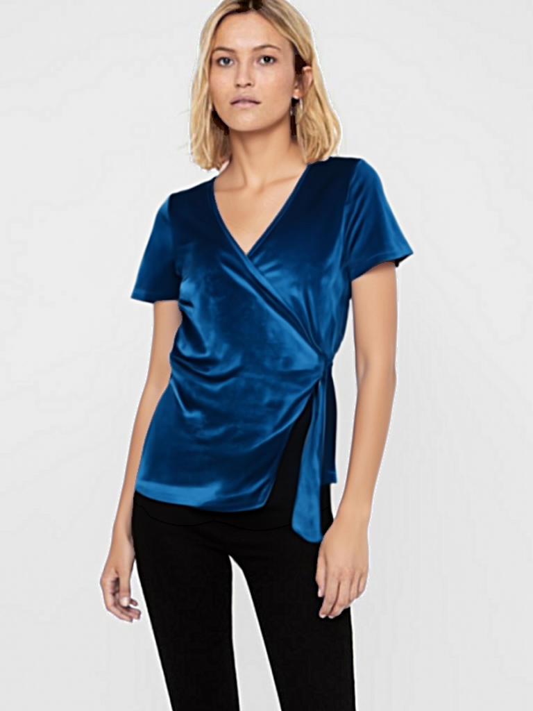
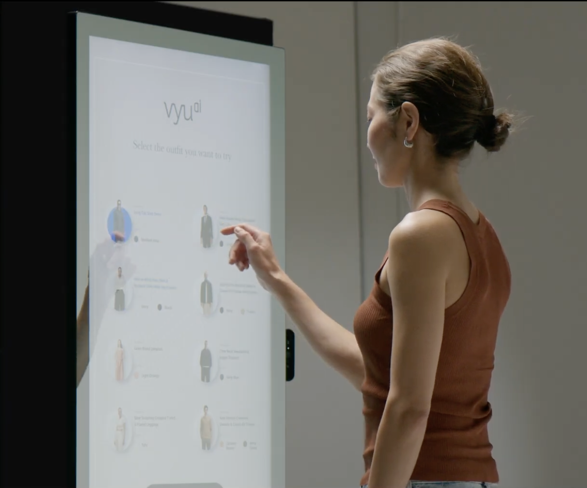

Weekly Progress Report
EA-VTON: Ethnicity-Aware Virtual Try-On with Population-Adaptive Size Recommendation
Progress report for April 3, 2026 to April 9, 2026.
HCMC National University
Week Summary
Main progress this week
Upload person + garment directly. No catalog needed.
Real FASHN inference on 2 keyframes + 13 warped frames.
Paper contributions defined. 5 novel claims identified.
Raw vs enhanced comparison at 3 step counts.
The project now has a simplified try-on workflow, a tested video pipeline, and a clear research direction with defined paper contributions.
- Built simple try-on endpoint — upload 2 images, get result.
- Ran real video pipeline E2E test with FASHN v1.5 on CPU.
- Wrote research plan (docs/10-research-plan.md).
- Updated test results with raw and enhanced step comparisons.
The paper's novel contribution is fit-aware rendering — making VTON output reflect actual garment fit (tight/normal/loose) based on ethnicity-aware body estimation. FASHN is the backbone; EA-VTON adds the sizing intelligence.
New Feature
Simplified try-on workflow
User uploads a person photo and a garment image. No catalog required.
Backend runs 5-stage pipeline: preprocess → inference → postprocess → composite.
Shows person, garment, and try-on result side by side with confidence score.
Result image can be downloaded. Pipeline stages are tracked live.
| Method | Path | Purpose |
|---|---|---|
| POST | /api/tryon/simple | Upload person + garment, start job |
| GET | /api/tryon/simple/{id} | Poll job status with stages |
| GET | /api/tryon/simple/{id}/image | Download result image |
New /simple page with drag-and-drop zones for both
images, garment type selector, and live pipeline status tracking.
Video Pipeline
Real video try-on E2E test
| Stage | Time | % |
|---|---|---|
| Frame extraction | 90ms | 0.0% |
| Pose tracking | 2.3s | 0.3% |
| Keyframe detection | 3ms | 0.0% |
| Keyframe VTON (2 frames) | 13.2 min | 95.9% |
| Flow warping (13 frames) | 29s | 3.5% |
| Total | 13.7 min | 100% |
- VTON inference is 96% of total time on CPU.
- On GPU this drops to ~5s per keyframe (vs 6.5 min).
- Flow warping works at 0.5 FPS (CPU). GPU would be 10–20x faster.
- All 7 pipeline stages completed without errors.
Video try-on is a demo pipeline (Plan A). The architecture is sound but requires GPU for practical use. Plan B (distilled student model for 30 FPS) is documented as future work.
Quality Comparison
Raw VTON output at different step counts


Enhanced output (post-processed)


Evaluation
Benchmark results
| Steps | Inference | A100 est. | Sharpness | Garment detail |
|---|---|---|---|---|
| 10 | 625s | ~2.5s | 41.2 | 55.2 |
| 20 | 953s | ~5s | 44.1 | 57.6 |
| 30 | 1512s | ~7.5s | 45.6 | 58.3 |
20 steps is the sweet spot — 93% of 30-step quality at 60% of the cost.
- Model: FASHN VTON v1.5 (972M params, Apache 2.0)
- Architecture: MMDiT (maskless, no DensePose needed)
- Output: 576×864 pixels
- Post-processing: garment-only sharpening + lighting transfer
Face SSIM: 0.9345 across all step counts. The compositing pipeline ensures face, skin, and background are pixel-identical to the original photo.
Research Plan
Paper contributions
Calibrated regression formulas for 5 Vietnamese body clusters. Demonstrates US model overestimates chest by ~5.8cm.
Reweight RTR (US, 192K rows) to simulate Vietnamese population. ESS: 12.6%.
Deform garment mask based on predicted fit level (tight/normal/loose). Core novel contribution.
Estimate height/weight from photo using MediaPipe landmarks. Optional enhancement.
Size Accuracy (SA), Fit Visual Consistency (FVC), Population Fairness (PF).
FASHN VTON is the backbone (cited, like SD in diffusion papers). Our contribution is making VTON population-aware and fit-aware — users see both how a garment looks and whether it will fit.
- Tier 1: CVPR, ECCV, ICCV
- Tier 2: WACV, ACCV, ACM MM
- Applied: Fashion & AI workshops
Future Vision
Not yet functional — requires further work

Needs real-time video VTON at 30 FPS. Current pipeline runs at 0.02 FPS on CPU. Requires GPU infrastructure and a distilled lightweight model (Plan B) that does not exist yet.
The video pipeline architecture is built but produces poor quality results. Optical flow warping creates visible artifacts. Keyframe VTON takes 6+ minutes per frame on CPU. Not usable for demonstration.
- GPU compute (A100 or equivalent)
- Distilled student model (~20M params) for real-time inference
- Improved temporal consistency for video
- Hardware integration for smart mirror kiosk
Next Steps
Plan for next week
- Implement fit predictor — body measurements + size chart → fit level.
- Implement fit renderer — deform garment region based on fit level.
- Integrate into pipeline as new stage between inference and composite.
- Build evaluation dataset with known body measurements.
- Implement Size Accuracy and Fit Visual Consistency metrics.
- Run ablation: with/without importance weighting, with/without fit rendering.
Image-based try-on works. Size recommendation works. Video try-on and smart mirror are not functional yet. Next priority is fit-aware rendering (C3) and evaluation metrics (C5).